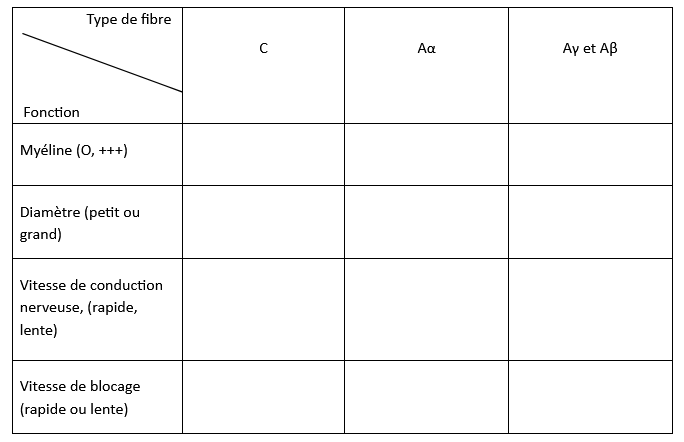
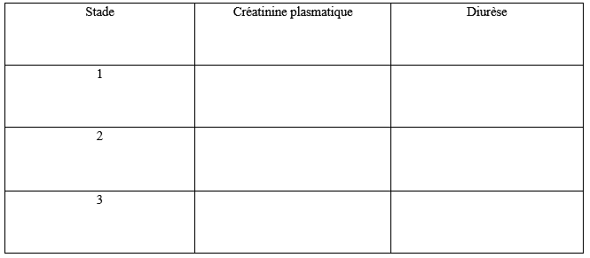

Citez-le ou les récepteurs α (Alpha) et β (Bêta) au(x)quel(s)se lie la Noradrénaline au niveau du cœur et des vaisseaux (artères et veines).
Question 2
Citez-le ou les récepteurs α (Alpha) et β (Bêta) au(x)quel(s)se lie l'adrénaline au niveau du cœur et des vaisseaux (artères et veines).
Question 3
Citez-le ou les récepteurs α (Alpha) et β (Bêta) au(x)quel(s)se lie l'éphédrine au niveau du cœur et des vaisseaux (artères et veines).
Question 4
Concernant les antibiotiques, citez les facteurs qui influencent la durée de l'antibiothérapie.
Question 5
Quels sont les bénéfices de la désescalade antibiotique?
Question 6
Citez 5 familles d'antibiotiques bactéricides.
Question 7
Citez 5 familles d'antibiotiques temps dépendant.
Question 8
A propos du syndrome de perfusion du propofol, décrivez les circonstances de survenue et citez 4 facteurs de risque?
Question 9
Précisez le moment d’injection et de réinjection de la céfazoline dans le cadre de l’antibioprophylaxie.
Question 10
A propos des anesthésiques locaux, citez 3 propriétés physico-chimiques qui influencent le délai et/ou la durée d’action du bloc.
Question 11
A propos de la physiologie du nerf périphérique, complétez le tableau suivant en utilisant les propositions entre parenthèses.

Question 12
Citez les particularités physiologiques du patient obèse au plan respiratoire.
Question 13
Citez les particularités physiologiques du patient obèse au plan cardiovasculaire.
Question 14
Citez les modifications cardiovasculaires observées chez la femme enceinte durant la grossesse.
Question 15
Citez 4 situations qui modifient la valeur seuil des indices dynamiques de précharge-dépendance pour la prédiction de la réponse au remplissage vasculaire.
Question 16
Citez les facteurs physiologiques qui modifient le débit sanguin cérébral.
Question 17
A propos de la classification KDIGO, qui caractérise la gravité d’une insuffisance rénale aiguë, complétez le tableau suivant:

Question 18
Définir la pression motrice en ventilation contrôlée, précisez son unité de mesure. Comment varie la compliance en fonction de la pression motrice? Donnez la valeur seuil maximale acceptable de la pression motrice dans le SDRA.
Question 19
A propos de la distribution du rapport VA/Q en ventilation mécanique, définissez et différenciez le shunt vrai de l’effet shunt. De plus, concernant l’installation du patient, quelles sont les deux positions qui majorent l’hétérogénéité du rapport VA/Q ?
Question 20
Intérêts des modes ventilatoires assistés en réanimation ?
🚀 Rejoignez notre formation complète
Cette annale fait partie de notre programme de formation. Découvrez notre préparation intensive avec corrections détaillées pour maximiser vos chances de réussite aux EVC.